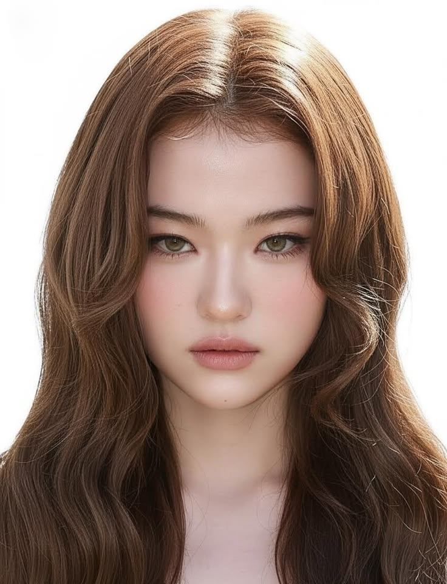
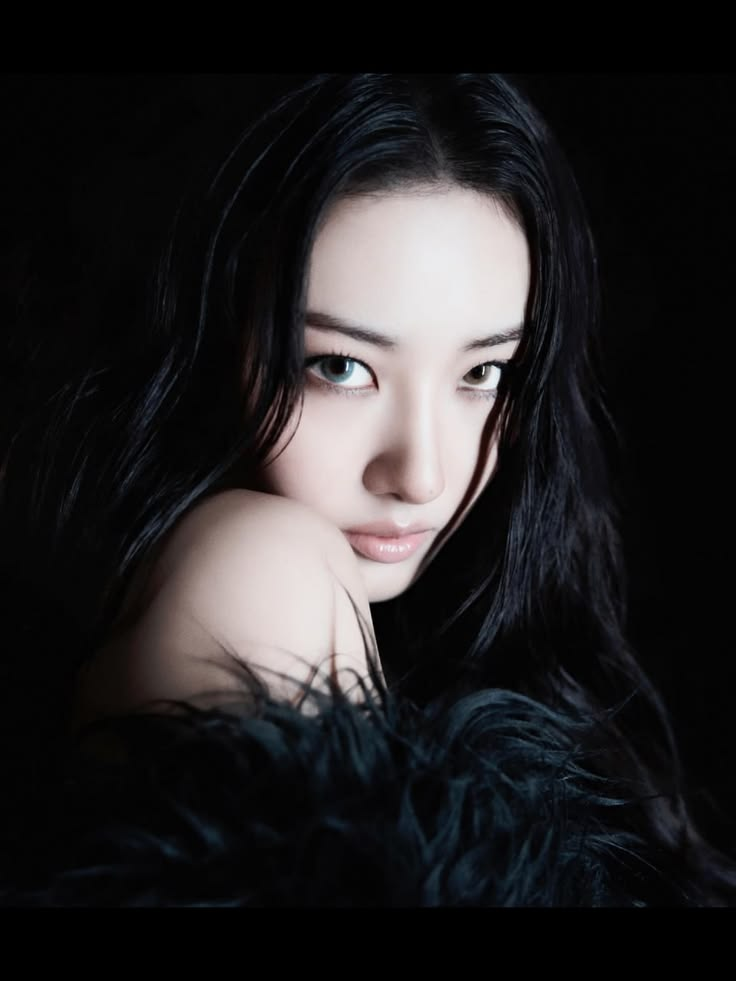
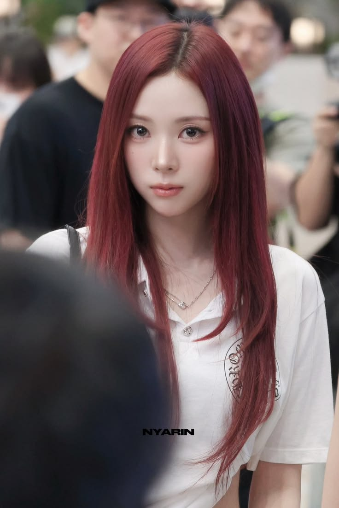
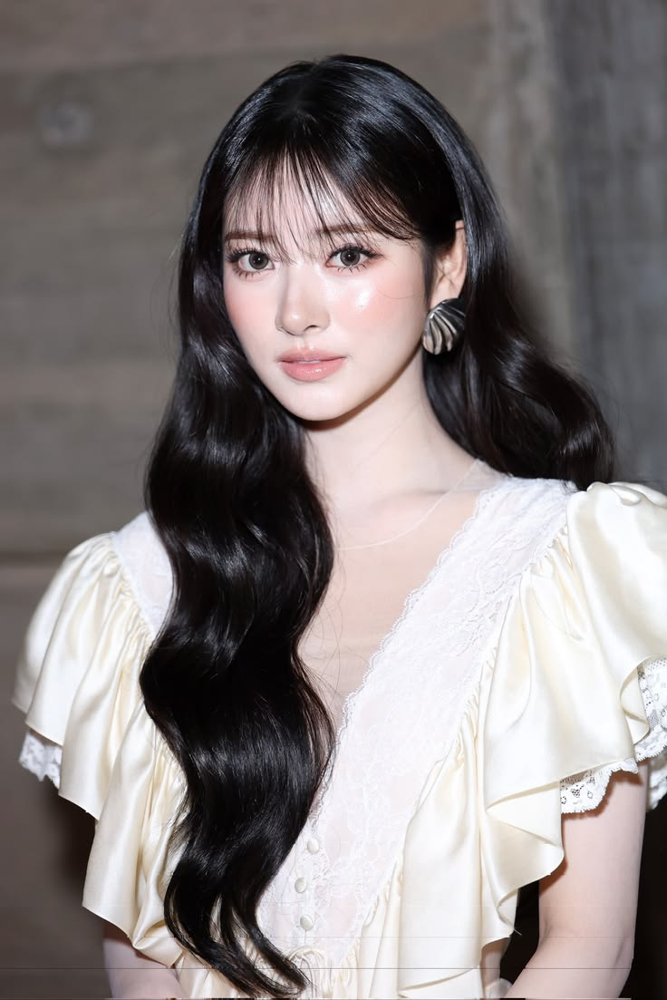
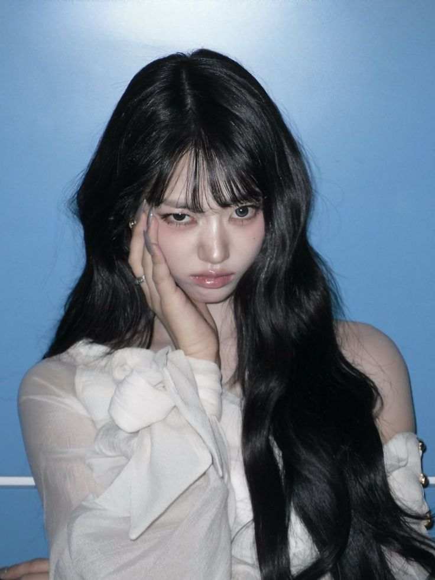

O MEOVV é um grupo feminino de K-pop formado pela THE BLACK LABEL.
O grupo é conhecido por seu conceito marcante, performances e músicas que misturam diferentes estilos dentro do K-pop.

Maknae, vocalista, dancer e rapper

Vocalista principal e dancer

Rapper principal, vocalista e dancer

Vocalista, visual e dancer

Dançarina principal e vocalista